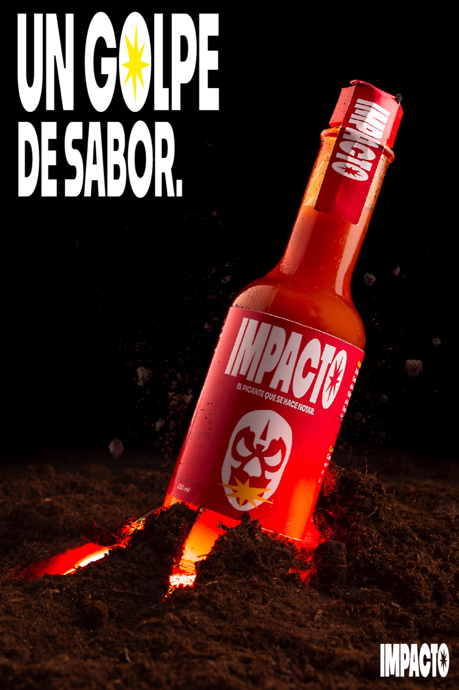

Impacto
Campaña para una salsa picante que no pide permiso. Fotografía de producto, retrato y un lema directo, llevados a marquesinas, revista y redes sociales.
- Anuncio de la salsa picante Impacto: Un golpe de sabor
- Anuncio de la salsa Impacto: Prueba. Aguanta. Repite.
- Anuncio de Impacto con un chico sujetando la botella: Pruébalo si te atreves
- Anuncio de Impacto: un puño golpea la cara de un chico
- Anuncio de Impacto en una marquesina de autobús
- Cartel de Impacto en la fachada de un edificio
- Publicaciones de Instagram de la campaña Impacto
- Revista abierta con el anuncio de Impacto a doble página
- Página de revista con el anuncio de Impacto
- Página de revista de Impacto: Él ya lo probó, ¿y tú?